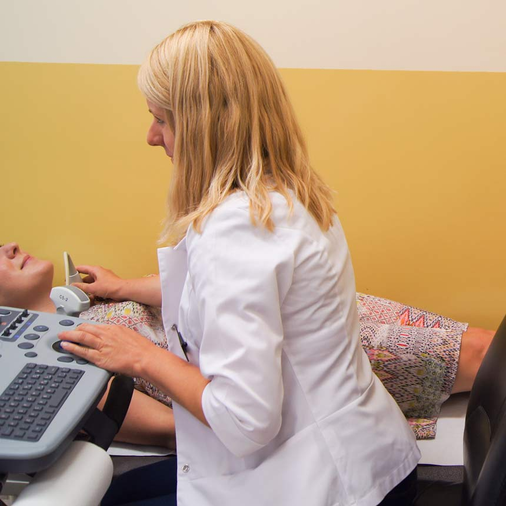
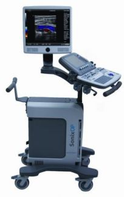

Personel medyczny i godziny przyjęć
- Lek. med. Marta Martynowicz
- Badania niemowląt, dzieci i dorosłych
- Wtorki i czwartki w godz. 13.00 -16.00
- Lek. med. Monika Plona-Herbst
- Badania niemowląt, dzieci i dorosłych
- Środy w godz. 13.00 - 18.00
- Lek. med. Julia Rutkowska
- Specjalista radiologii i diagnostyki obrazowej. Badania dzieci i dorosłych
- Środy w godz. 13.00 - 18.00
- ----------------
- -------------
- -------------
Prosimy o umawianie się na konkretne godziny.
Zalecane jest przedstawienie wcześniej wykonywanych badań USG.

Sprzęt medyczny
Badania są wykonywane na nowoczesnym aparacie USG SONIX OP

Cennik
- USG brzucha 70 zł
- USG tarczycy 60 zł
- USG piersi 80 zł
- USG układu moczowego70 zł
- USG brzucha z oceną gruczołu krokowego 80 zł
- USG gruczołu krokowego 60 zł
- USG węzłów chłonnych 60 zł
- USG ślinianek 60 zł
- USG tkanek miękkich 60 zł
- USG Doppler aorty i tętnic biodrowych 120zł
- USG Doppler żył lub tętnic kończyn dolnych -
- – obie kończyny dolne 110 zł
- – jedna kończyna dolna 80 zł
- USG Doppler tętnic szyjnych i kręgowych 90 zł
- USG Doppler tętnic nerkowych 140 zł
- - -
Badanie bezpłatne
W naszym gabinecie możliwe są bezpłatne badania w ramach NFZ, na podstawie skierowania od lekarzy (Niepublicznych Zakładów Opieki Zdrowotnej) posiadających umowę z naszą przychodnią na wykonywanie badań USG. W razie wątpliwości prosimy o kontakt telefoniczny.
Przygotowanie do badania
Aby zobaczyć jak przygotować się do badania kliknij tutaj